1. To apply to BYU-Pathway Worldwide, you first need to create a path account.
To do that, visit https://churchofjesuschrist.org and click sign in.
2. Click "Create a new Account" on the "Sign In" page and follow the instructions to create an account.
Be sure to remember your username and password.
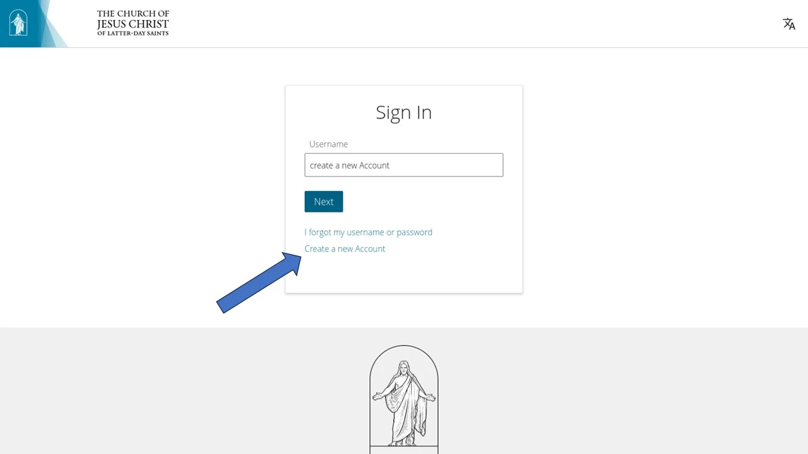
3. Visit https://byupathway.edu and click "Apply For Free".
3. Click "Apply Now" on the following page.
4. Using your path account, enter your username
and password.
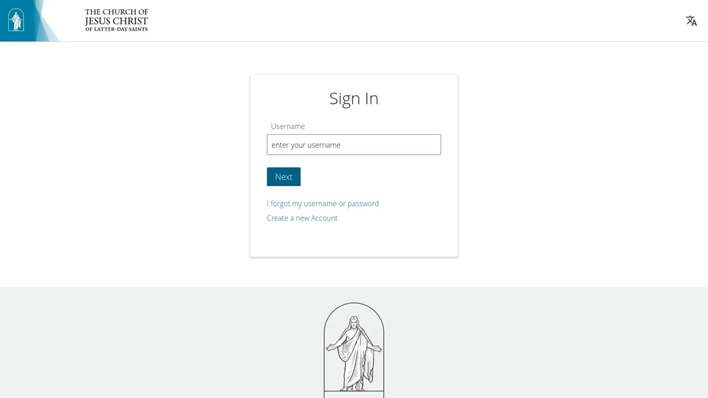
5. Enter your password.
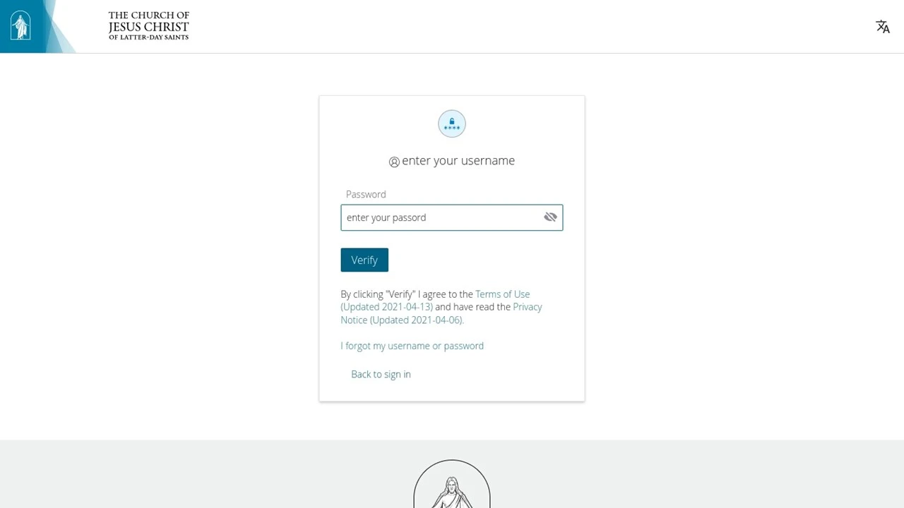
6. Follow the page's instructions
Follow the instructions below.
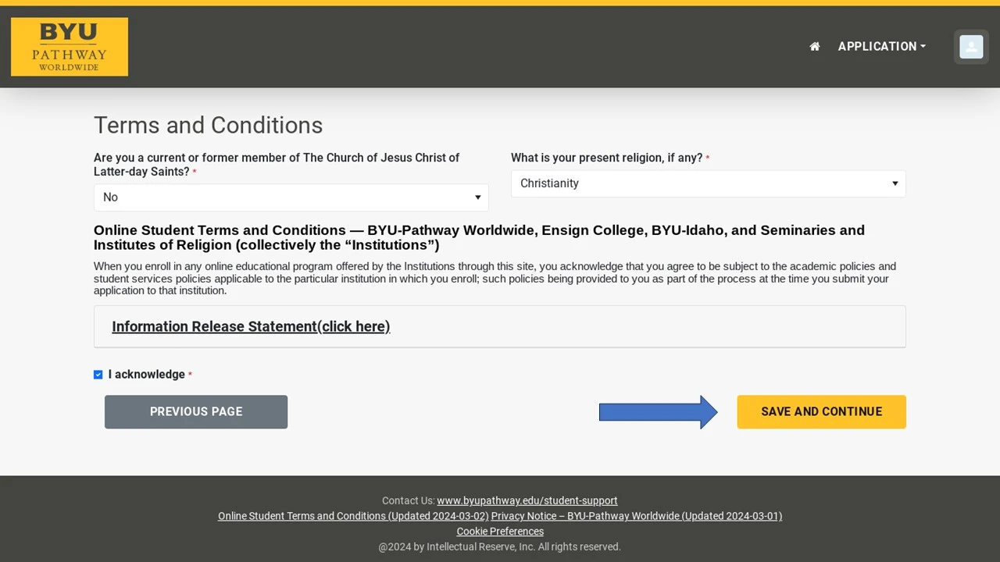
Follow the instructions below.
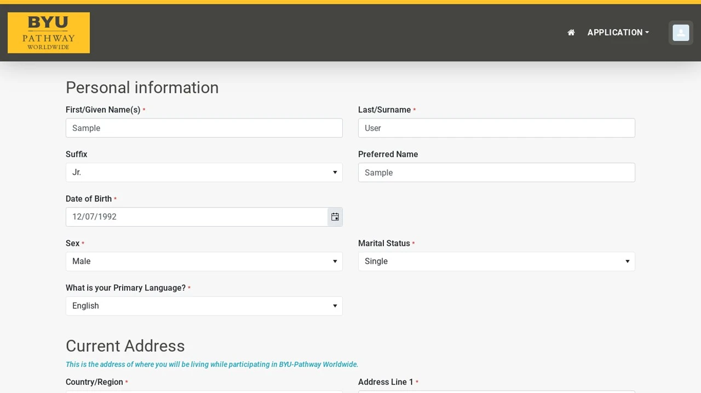
Follow the instructions below.
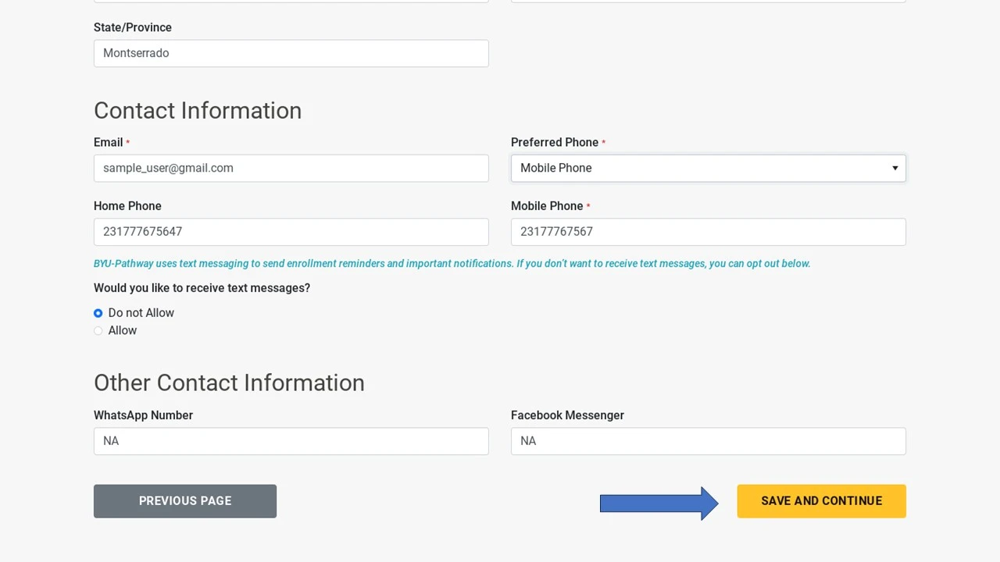
Follow the instructions below.
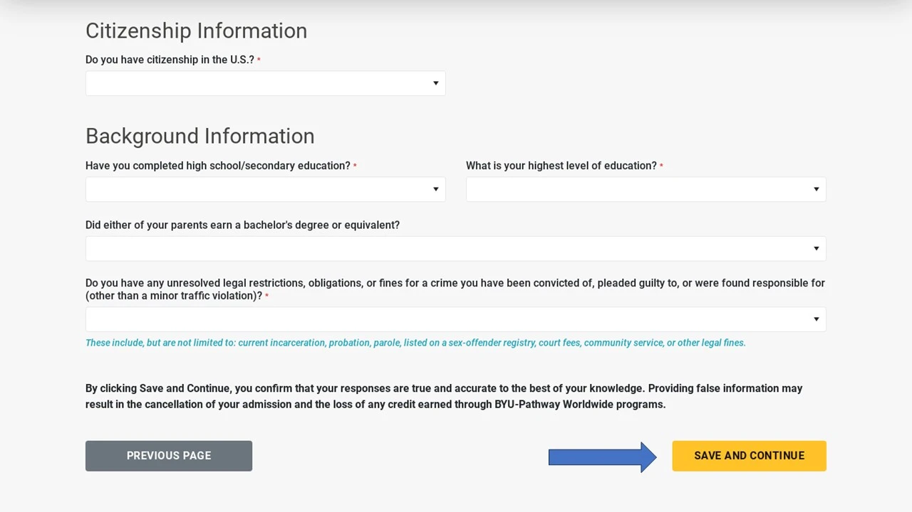
Follow the instructions below.
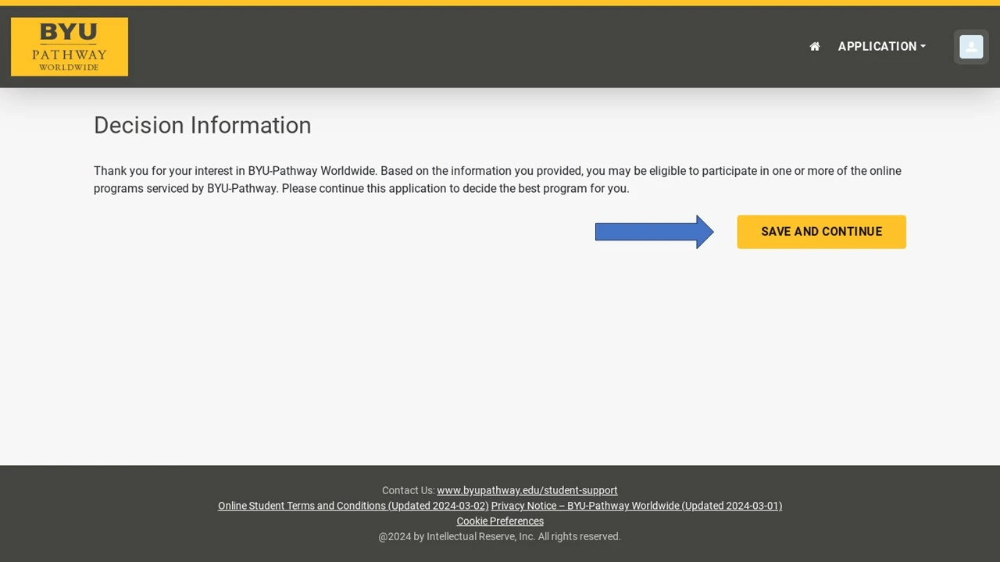
Follow the instructions below.
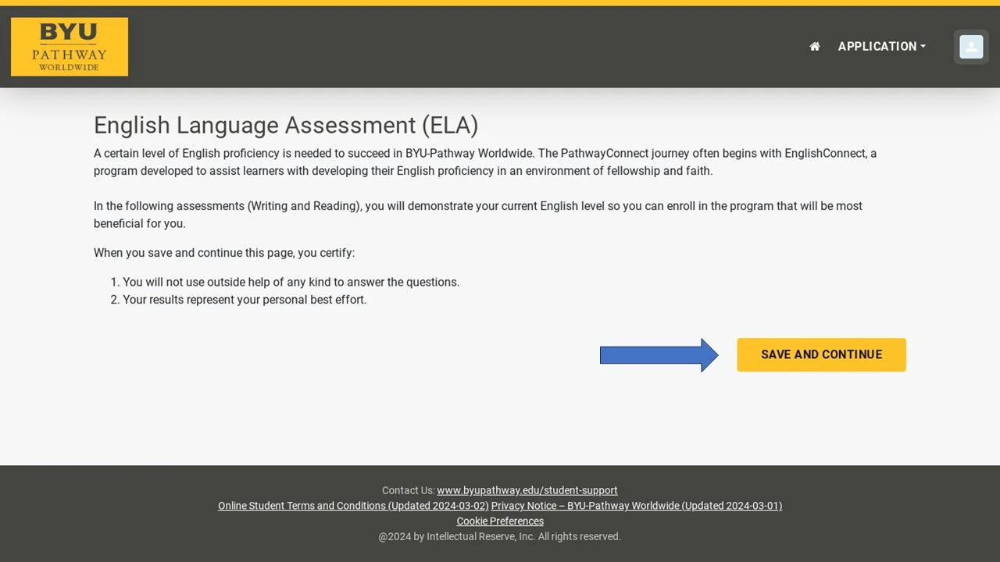
Follow the instructions below.
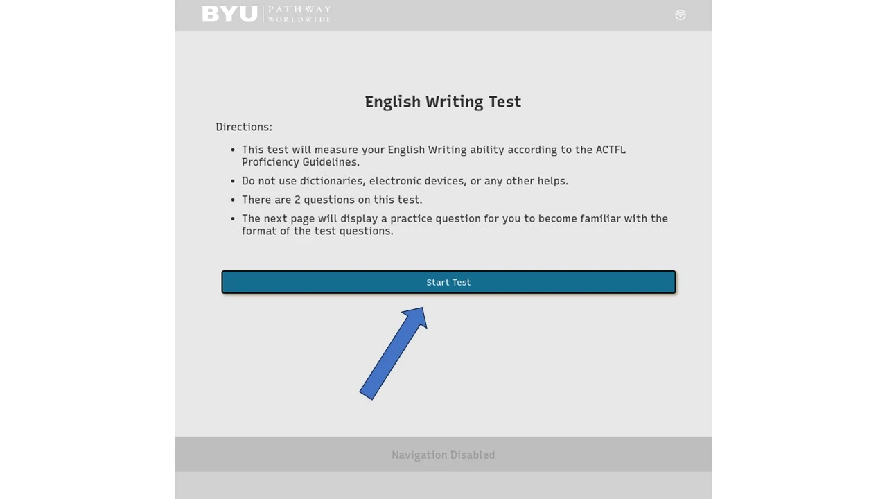
Follow the instructions below.
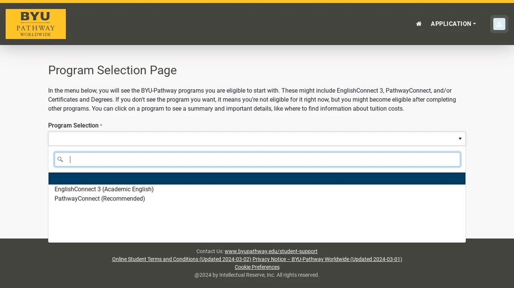
Follow the instructions below.
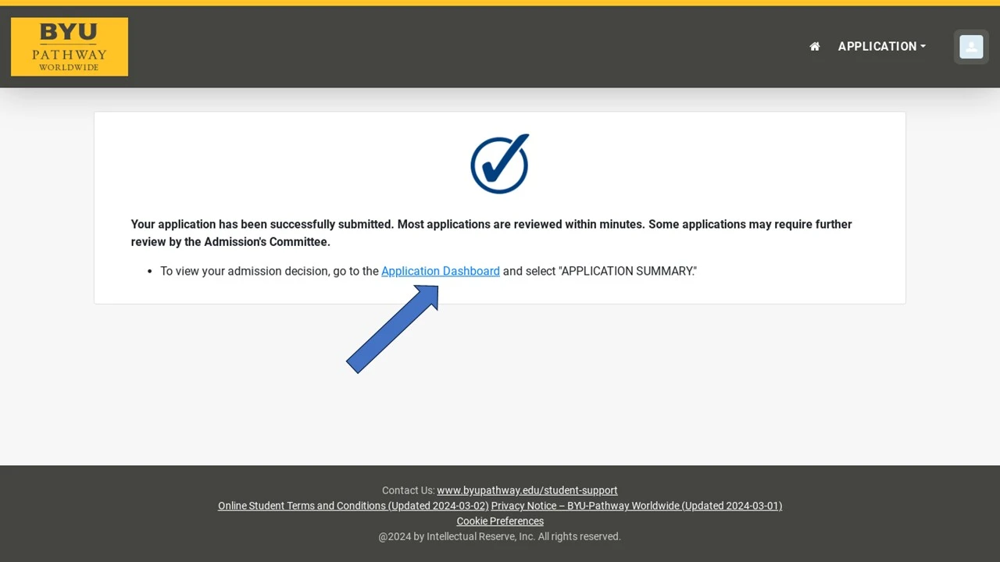
Follow the instructions below.
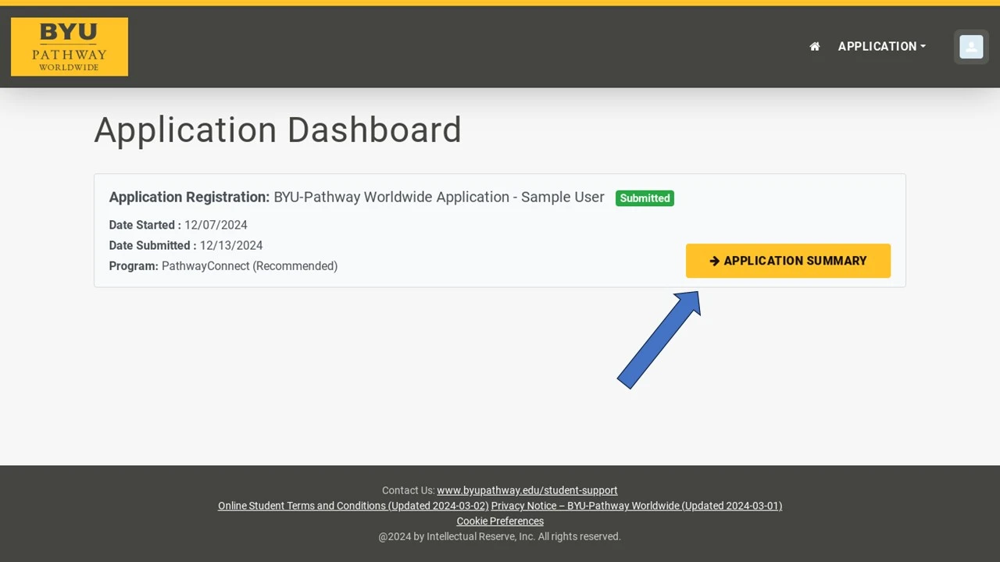
Follow the instructions below.
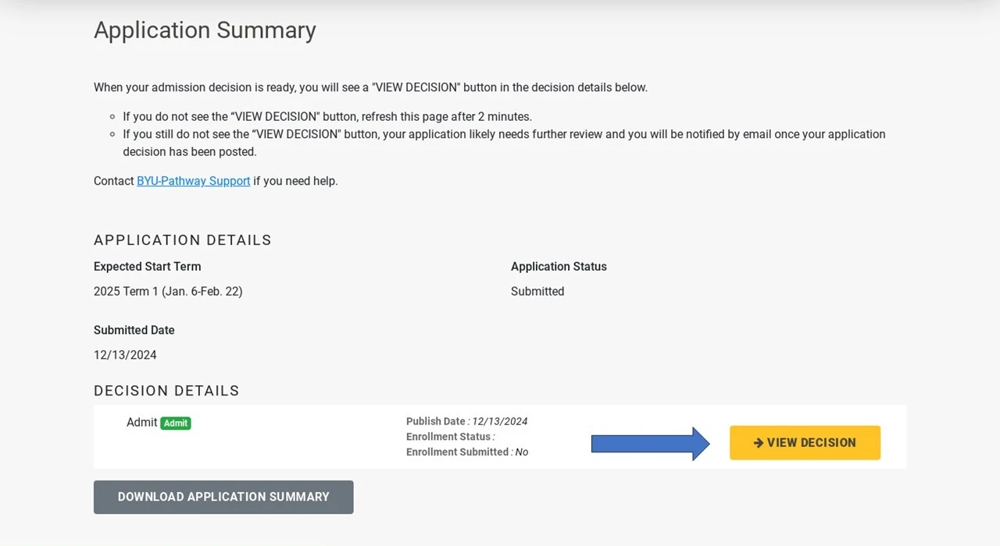
If you followed the above steps correctly, you have successfully applied to BYU-Pathway. Congratulations. Now you need to register for your
classes for the next term. Click here to get started.